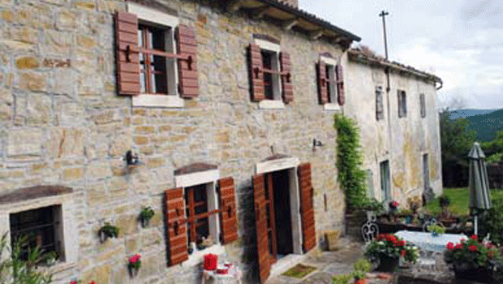

Întâlnire suprinzătoare cu informatorii istroromâni ai profesorului nostru Radu Flora în investigațiile sale de realizare a Atlasului Lingvistic Istroromân
Mergem la Șușnievița. În drum spre sediul Comunității Locale stăm de vorbă cu Maria Paicovici, vlahă, cum ni se prezintă, care ne vorbește po vlaški, despre familia sa, vlahii din Șușnievița și trecutul acestora. Conversăm în limba străbunilor ei, vlahă sau română; română, fiindcă în casa ei se vorbește românește, având în vedere că noră-sa, soția fiului ei, este româncă bănățeană din Maramorac, sat de lângă Panciova, în Voivodina.

- În trecut, toți ai noștri, vorbeau limba nostra. În fiecare duminică ne întâlneam la biserică, după aia la dom. Și noi, și copiii. Era seliștea plină. Acum, la Șușnievița, mai avem vreo 70 de vlahi, dar numai în opt case se vorbește limba nostra în familie. Și cu cine să mai vorbească, se întreabă Maria, când în mai toate casele trăiește doar câte un rumer, eventual doi. Tinerii din sat lucrează la Rijeka, Opatija, Lovran sau la Trieste. Noi, cei mai în vârstă, ne ocupăm aici, la Șușnievița, cu grădinăritul. Cultivăm cartofi și salată pentru turiștii de pe litoral.
La Șușnievița, ne-am întâlnit cu încă un istroromân, Țveici Bieleuș, dar, din păcate, nu voia să ne spună nimic. Este vlah, zice. Vorbește bine limba străbunilor săi pe care îi respectă, dar nu are ce ne spune. În schimb, ne-a surprins plăcut, bucuria cu care ne-a întâmpinat Iosip Micleau, un român, din acest sat, cum singur s-a prezentat, care, în urmă cu mai mulți ani a avut onoarea să-l cunoască și să-l găzduiască în casa lui pe profesorul Radu Flora. Am conversat cu el în limba vlahă. Greoi, dar l-am înțeles, mai puțin eu pe Iosip decât el pe mine, mi se pare. Iosip ne-a rugat să-i trimitem ziare românești din Banat și, dacă avem, vreo carte cu poezii populare românești. Mi-a mai zis că în familia lui se vorbește "numai vlașchi."
La Nova Vas, sat din apropierea Șușnieviței, vizităm cimitirul. Pe criptele vechi întâlnim nume de familie asemănătoare cu cele ale românilor din Banat: Micleuș (Iosip, Ana...), Jurman, Perin, Tomici, Prodan (Maria, Bruno...). Continuăm pe un drum anevoios, prin pădure și prundiș, la Miheli, în trecut cătun cu mai multe case, acum doar cu două, dar bine păstrate, cu flori și grădini în jurul lor, dar fără viață. Nu e nimeni, nici în case, nici în grădină. În apropiere observăm rămășițele altor case, acum în ruine, peste care au crescut bălării și smochini sălbatici... Erau și acestea, odată, demult, vetre românești.
Drumul ne duce spre munte. Urcăm prin pădurea de brazi înalți care aproape că acoperă drumul îngust și pietruit, cu iarbă pe alocuri. Au dispărut și indicatoarele. Nu e nimeni niciunde. Liniște peste tot. Îi întreb pe Ervin și pe Branko, însoțitorii noștri, dacă știm noi unde mergem?
- Înainte, spune Branko!
Are dreptate! Unde altundeva decât înainte?
Iată-ne la vreo 8 kilometri distanță de Miheli. Am ieșit din pădure și am intrat în Škobići (Șcabicii), un cătun cu numai trei gospodării, o fortăreață, de fapt, acum cu numai trei case vechi construite din piatră de munte, în stil tradițional istrian, mari și frumoase, cu pivnițe încăpătoare și construcții anexe spațioase.
Zic fortăreață, fiindcă în satele de istroromâni casele erau construite în formă pătrată, cu o curte comună, ca o fortăreață, pentru a se proteja de hoți. În timpul iernii, în curte erau închise și vitele. În spatele caselor se întind grădini frumoase, iar înspre vale se află o plantație enormă de smochini pentru condițiile de teren montan din Istria, unde viile și pomii se plantează în terase, mai ales pe creasta aceasta stâncoasă a masivului muntos a Učka (Monte Maggiore). Pe o suprafață de două hectare sunt plantați aproape două mii de smochini.
Ne întâlnim aici, într-una din cele trei case ale "satului" Șcabicii, cu dr. Vera Bilek, proprietatea acestor singurătăți bogate. Celelalte două case aparțin familiilor Ljubičić și Pituli. Sunt case bine întreținute în care își petrec vacanțele prietenii celor două familii și, bineînțeles, ei cu rudeniile lor.
Despre unicul locuitor de azi al acestui cătun, respectiv al celor trei case, dr. Vera Bilek, nu știu ce aș putea spune. Dar, iată ce afirmă doamna doctor:
- Îmi face plăcere această singurătate, unde la kilometri întregi distanță de orice așezare omenească te împrietenești cu natura. Îmi petrec aci cel puțin patru zile din săptămână. În restul zilelor sunt la Opatija, unde am casă și cabinet de stomatologie, în care lucrează câțiva medici specialiști, foarte apreciați. Eu provin dintr-o familie de doctori stomatologi. Tata, bunicul și străbunicul au stabilit această tradiție în familie, așa că eu fac parte din cea de-a patra generație.
Doresc să vă spun că sunt pasionată de jurnalism și de fotografia artistică. Călătoresc peste tot în lume, vizitez cele mai interesante festivaluri din India, Peru, Brazilia, Chile...Scriu și realizez fotografii artistice de la aceste manifestări pe care le public în cele mai căutate reviste de mare tiraj din Europa.
- Cum vă descurcați singură aici, în munți?
- Nu sunt singură tot timpul. Lucrez în liniște și mare plăcere cultiv averea pe care am moștenit-o de la părinți și pe care o extind în vale. Am plantat, acum doi ani, 1760 de smochini de vechiul soi istrian foarte rezistent. Este vorba de cea mai mare plantajă de smochini, ca suprafață, din Europa și una dintre cele mai moderne din țară.
De la Vera Bilek am aflat că în apropiere, înspre munte, izvorește pârâul Vlaški Potok, care curge pe lângă Škabići.
- La izvorul acestui pârâu au existat, până în urmă cu câțiva ani, patru case de vlahi în care au trăit 25 de persoane, mărturisește dr. Vera Bilek. Ei au venit din Vlašija (Vlașia) și au vorbit po vlašije. Se consideră că aici se termină teritoriile vlahe din Istria, cu aceste case în care ne aflăm acum.
Este vorba de un sat, cătun mai degrabă, acum cu numai trei gospodării, care făcea parte dintr-un complex cu nouă grupuri de case, respectiv cătune: Kostrčane (Costârceane), Dolinščina (Dolinșcina), Trkovci (Târcovții), Brdo (Bârdo), Miheli, Škabići (Șcabicii), Zankovci (Zancovții), Dražine (Drajine) și, iată, cele patru case despre care nu s-a scris până acum și pe care nu le-am găsit pe nici o hartă, fiindcă acest cătun nici nu avea nume, ci aparținea familiilor Ljubičić (Liubicici) de la izvoarele pârâului Vlaški Potok (Pârâul vlahilor). Toate aceste așezări erau populate de vlahi, respectiv de istroromâni. Astăzi, însă, ele sunt aproape toate părăsite sau doar cu câțiva bătrâni. Dolinșcina, de exemplu, prin care am trecut în drum spre casă, mai are patru case vechi, dintre care una transformată în casă de odihnă, frumos amenajată. Nu mai trăiește nimeni nici în Grmin (Gârmin) de pe șoseaua Kršan - Șușnievița, în cele două case complet ruinate de aici.
Ne oprim în Letai, un sat cu câte două - trei case la un loc, răsfirate pe o coastă de deal. În total sunt 11 case cu 29 de suflete din care încă un bărbat și cinci bătrâne vorbesc istroromâna, respectiv vlaha. Două dintre acestea sunt de origine din satul Bârdo.
Costa Roșu
May 3, 2014
© 2014 Libertatea